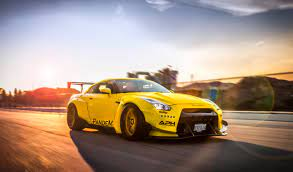
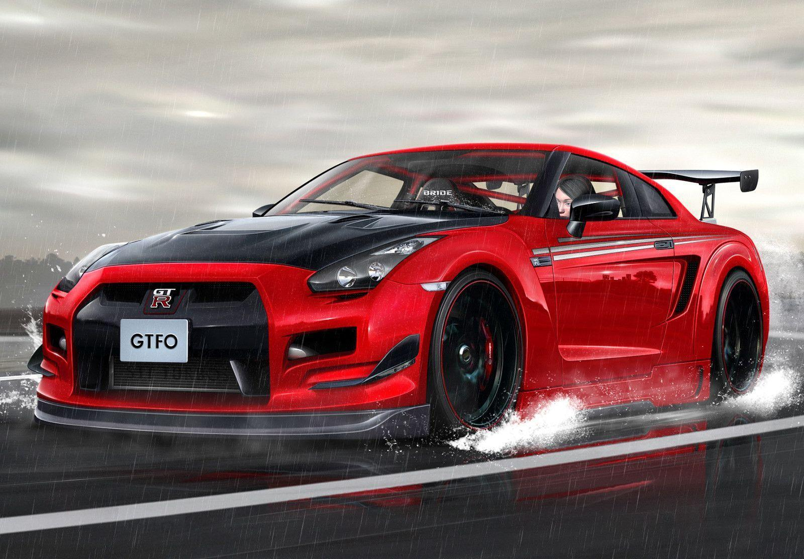
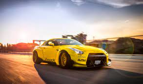
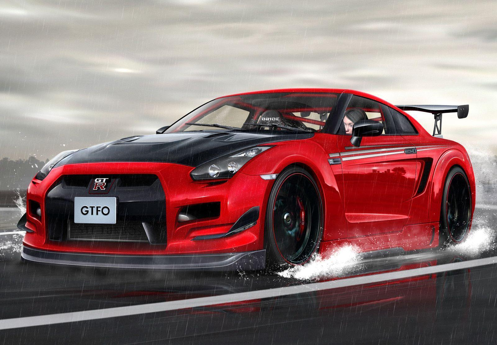

NISSAN GT-R
 



{kind=link}
{kind=link}
Click on the images to download the images !!
The Nissan GT-R is a high-performance sports car and grand tourer produced by Nissan that was unveiled in
2007.[2][3][4] It is the successor to the Skyline GT-R, a high performance variant of the Nissan Skyline. Although the car is the
sixth-generation model to bear the GT-R name,
the model is no longer part of the Nissan Skyline model lineup since that name is now
reserved for Nissan's luxury-sport vehicles. The GT-R shares the Nissan FM platform with the now separate Nissan Skyline luxury car and
the Nissan Z-car sports car.
The GT-R is an entirely new model sharing little with the Skyline GT-R save its signature four round
tail lights. Like some later generations of the Skyline GT-R, the GT-R has all-wheel drive with a twin-turbocharged 6-cylinder engine.
But the four-wheel-steering HICAS system has been removed and the former
straight-6 RB26DETT engine has been replaced with a new
VR38DETT V6 engine.[7] Because of the GT-R's heritage, the chassis code for the all-new version has been called CBA-R35,[8] or R35 for
short (where CBA stands for the emissions standard prefix), carrying on the naming trend from previous Skyline GT-R generations.
- Top Speed : 196 Mph
- Weight : 1,740 kg (3,840 lb)
- Acceleration : 0–97 km/h (0–60 mph) in 2.5 seconds
More details about beast